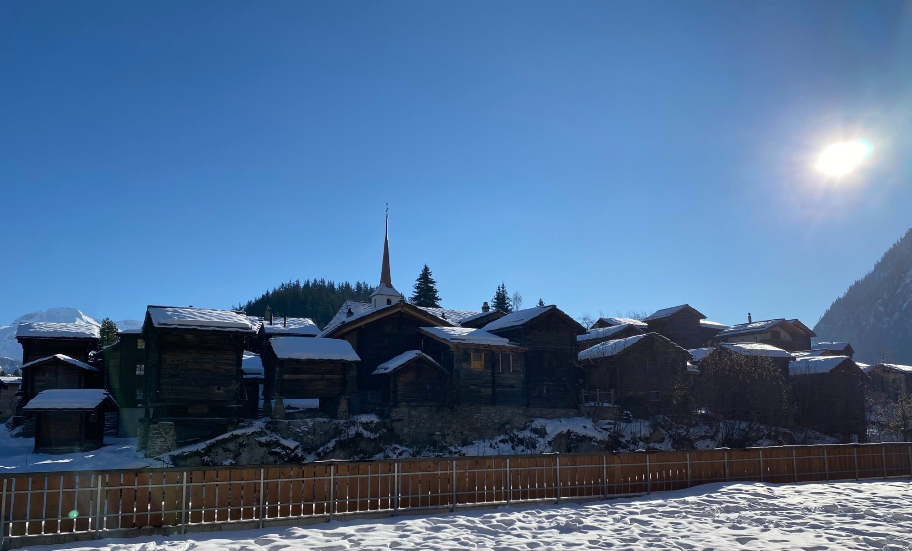
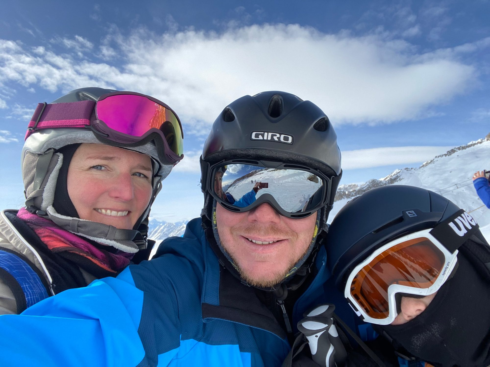
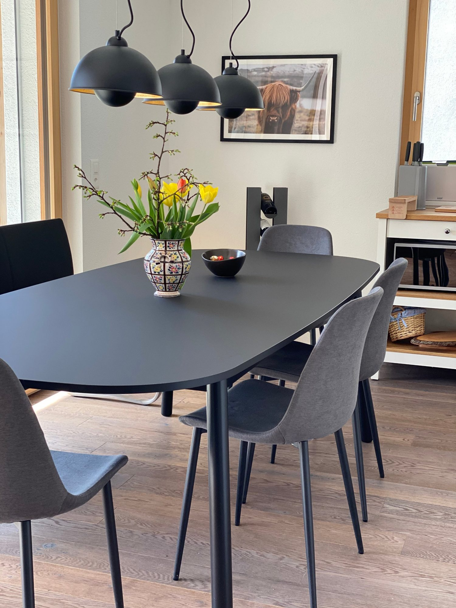
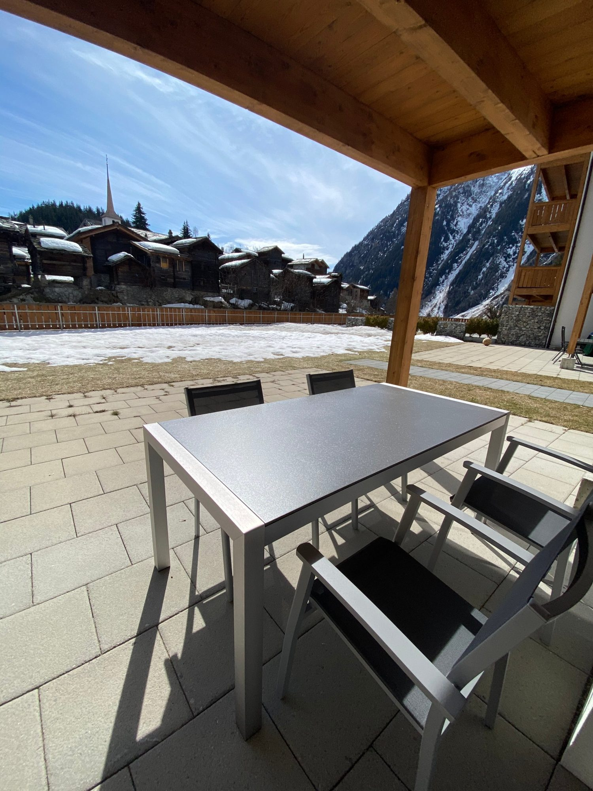
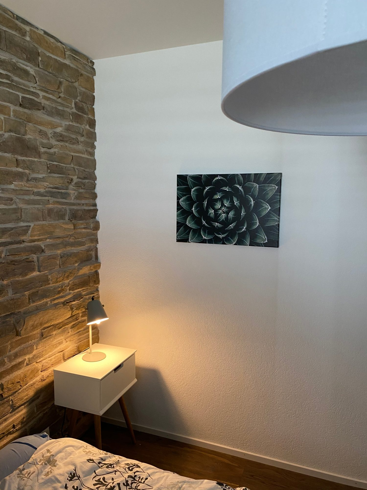
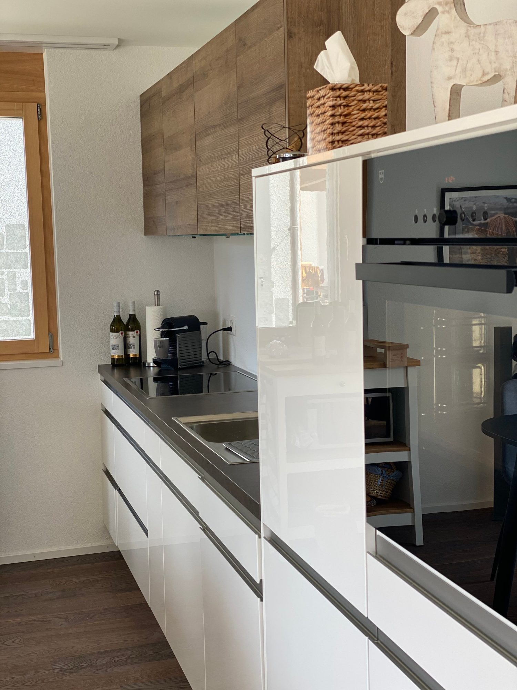
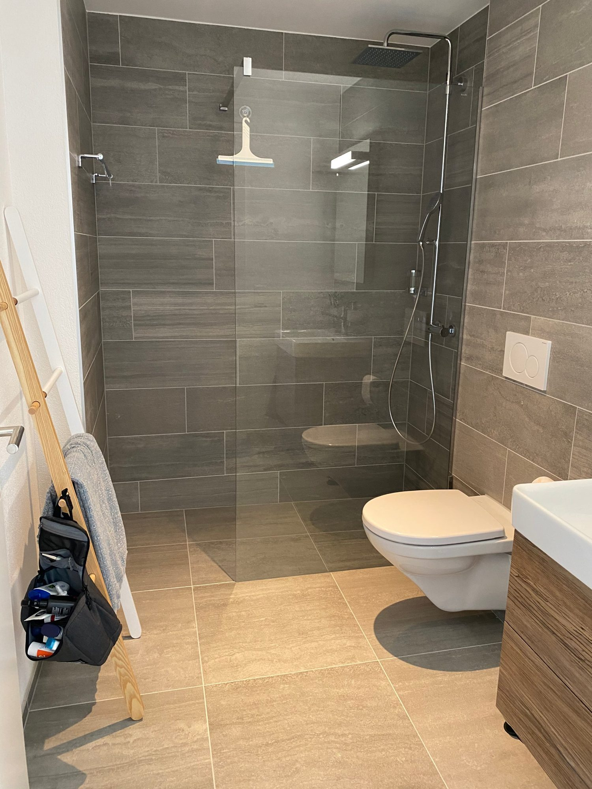
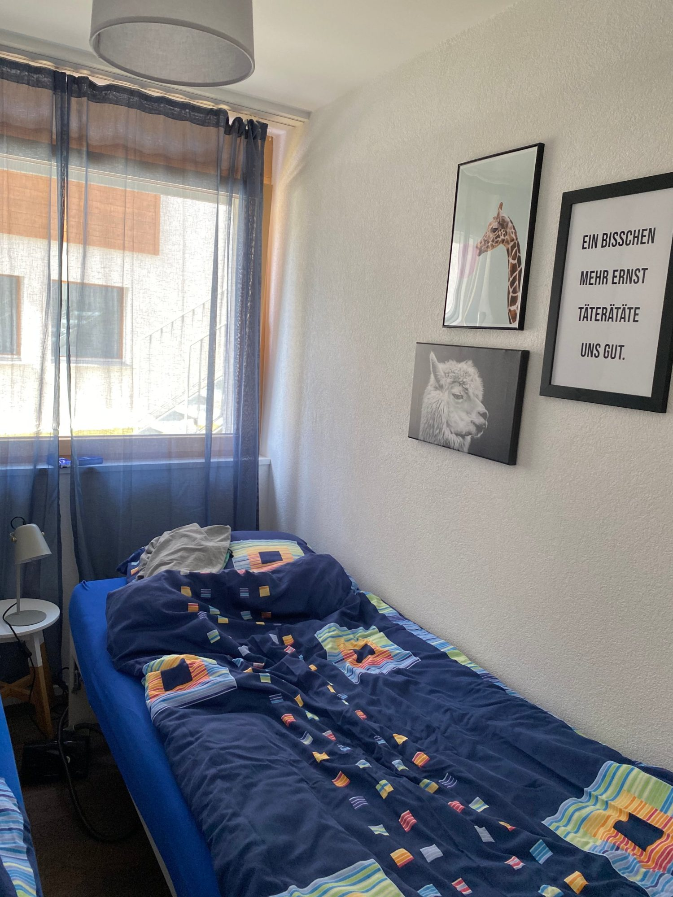
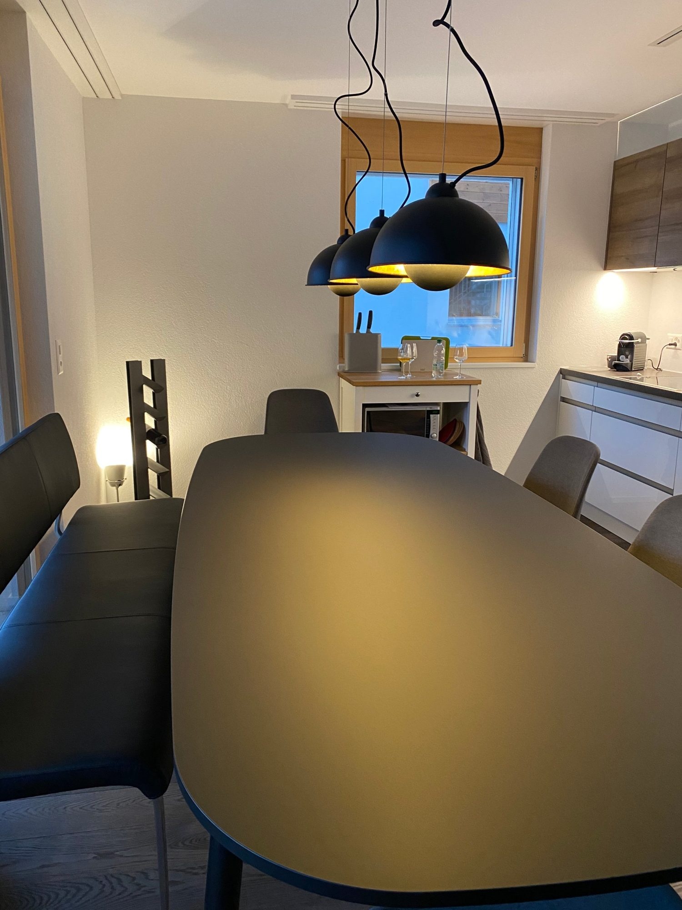
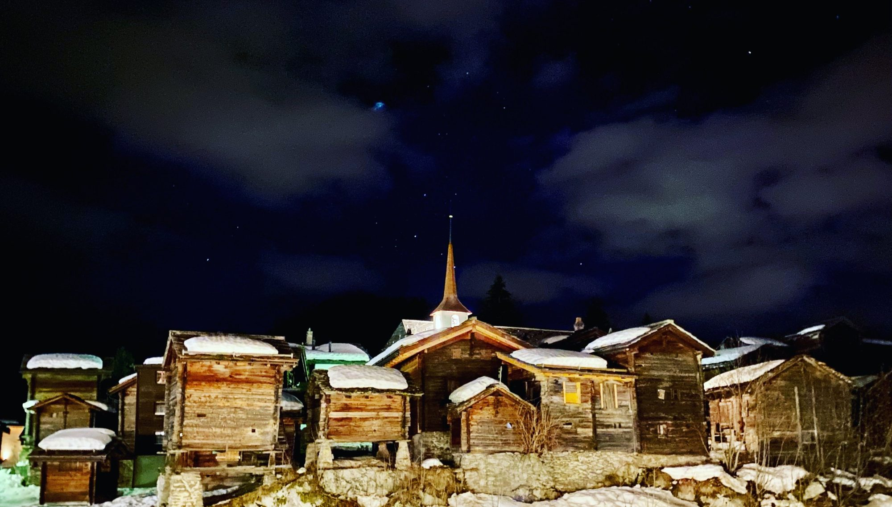

entspannen, bewegen, geniessen
Willkommen in unserer Sunnestube.
Eine helle Ferienwohnung mit Südterrasse im alten Blatten, hoch über Naters – wo wir als Familie zur Ruhe kommen, Ski fahren, wandern und am Abend den Blick auf die Walliser Berge geniessen.

Blatten-Belalp, 1'300 m
80 Schritte zur Bahn, den ganzen Tag Sonne auf der Terrasse.

Wer wir sind
Eine Familie aus dem Bärnbiet – mit dem Herz im Wallis.
Vor ein paar Jahren haben wir unser Herz an Blatten-Belalp verloren: an das Dorf mit seinen alten Holzhäusern, an die Sonne, die hier so lange scheint, an die Berge, die gleich vor der Haustür beginnen. Im Winter fahren wir gemeinsam Ski, im Sommer suchen wir Murmeltiere, grillieren auf der Terrasse und schauen den Wolken zu, wie sie über den Aletschgletscher ziehen.
2021 durften wir uns einen Traum erfüllen und die Sunnestube einrichten – mit viel Herzblut, bis in die letzte Ecke. Sie ist unser Rückzugsort. Und weil wir nicht immer da sein können, freuen wir uns, wenn ab und zu andere Familien hier das Gleiche finden wie wir: Ruhe, Sonne und ein Stück Zuhause in den Bergen.
«Wenn wir die Türe aufschliessen, ist der Alltag schon weit weg.»
Die Wohnung
Hell, gemütlich und mit Platz für sechs.
4½ Zimmer im Parterre der Residence Panorama, ganz nach Süden ausgerichtet. Vom grossen Esstisch schaut man direkt auf das alte Blatten, von der Terrasse auf die Walliser Südalpen. Morgens Kaffee an der Sonne, abends Fondue – so sieht ein guter Tag hier aus.







Gut schlafen
Ein Schlafzimmer mit Boxspringbett und Natursteinwand, eines mit zwei Einzelbetten und ein Kinderzimmer mit Bett und Bettsofa. Bettwäsche richten wir für euch.
Die Terrasse
Unser Lieblingsplatz: gedeckt, nach Süden, mit Gasgrill und Blick auf die Stadel des alten Dorfs. Im Winter mit Wolldecke, im Sommer bis spät am Abend.
Kochen & Fondue
Offene Küche mit allem, was es braucht – Geschirrspüler, Nespresso, Backofen. Dazu Fondue-Set, Tischgrill und eine Fonduebar für draussen.
Zwei Bäder
Eines mit grosser Dusche, eines mit Badewanne für die Kinder nach dem Skitag – beide mit WC.
Ski, Velo & Auto
Eigener Platz in der Tiefgarage, Lift direkt zur Wohnung. Abschliessbarer Ski- und Veloraum im Haus – die Skischuhe bleiben unten.
Kleine Dinge
WLAN, Smart-TV, Spiele und Zeichnungsmaterial für die Kinder, Wanderstöcke und ein Feldstecher für die Murmeltiere. Auf Wunsch ein Baby-Bett.
Blatten-Belalp
Ein autofreies Dorf, ein Sonnenberg, vier Jahreszeiten.
Blatten liegt auf 1'300 Metern oberhalb von Naters – ein Dorf aus sonnenverbrannten Walliser Stadeln, das sich seinen Charakter bewahrt hat. Die Bahn zur Belalp steht 80 Schritte von der Wohnung entfernt; oben öffnet sich der Blick auf den Grossen Aletschgletscher und das Nebelmeer im Rhonetal.
Was wir hier so mögen: dass alles nah ist, dass es nie überlaufen ist, und dass man abends zu Fuss von der Piste oder vom Wanderweg zurück in die warme Stube kommt.

Winter
Schnee vor der Tür, Sonne auf der Terrasse.
Das Skigebiet Belalp ist überschaubar und sonnig – genau richtig für Familien. Rund 47 Pistenkilometer bis auf 3'100 Meter, dazu Schlittelwege, Winterwanderwege und Schneeschuhtrails durch den Rischinerwald. Und Mitte Januar jagen bei der legendären Hexenabfahrt tausend Hexen den Berg hinunter.
- Saison etwa Mitte Dezember bis Anfang April
- Skischuhe im Skiraum, Lift bis vor die Türe
- Unser Tipp: Sonnenuntergang auf der Belalp, dann Fondue zuhause
Sommer
Wandern am Aletsch, Grillieren am Abend.
Über 60 Kilometer Wanderwege ab Belalp, mit Blick auf den grössten Gletscher der Alpen. Unsere Lieblingsrunde führt über die Hängebrücke zur Riederalp; mit den Kindern geht es zum Lüsgersee oder ins Gredetschtal. Wer mag, nimmt das Bike – oder lässt die Wanderstöcke einfach bei der Garderobe hängen und bleibt auf der Terrasse.
- Juni bis Oktober, oft Sonne bis in den Herbst
- UNESCO-Welterbe Jungfrau-Aletsch gleich nebenan
- Unser Tipp: früh los, Murmeltiere suchen, Zvieri am See
Für Gäste
Ab und zu teilen wir die Sunnestube gerne.
Wir vermieten nicht klassisch und nicht über Plattformen. Wenn wir selbst nicht in Blatten sind, freuen wir uns aber, wenn Familien oder Freunde der Region die Wohnung geniessen – Menschen, die sie so behandeln, wie wir es tun. Schreibt uns einfach, was ihr vorhabt. Wir melden uns persönlich.
Gut zu wissen
je nach Saison
Kontakt
Schreib uns – wir freuen uns.
Fragen zur Wohnung, zur Region oder eine Anfrage: Wir antworten persönlich, meist innert ein paar Tagen.
@sunnestube auf Instagram